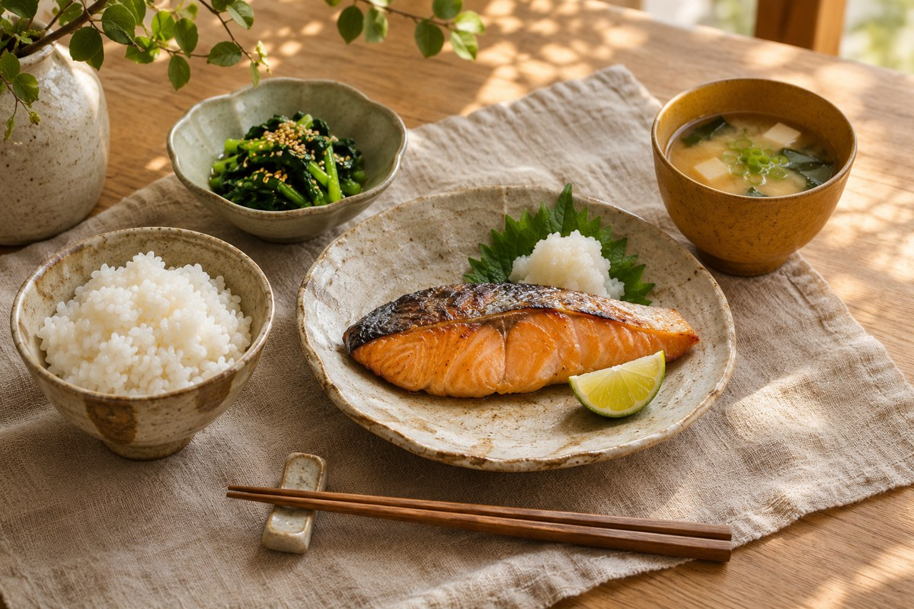

献立を探す
人数と時間を選ぶと、主食・主菜・副菜を組み合わせます。
暮らしの困りごとを相談する
心配なことを選ぶと、相談先と、電話などで伝えるためのメモを表示します。
相談するときのメモ
書き足した内容はこの画面だけに表示されます。
保存した献立
このブラウザーで、また作りたい夕食を見返せます。

人数と時間を選ぶと、主食・主菜・副菜を組み合わせます。
心配なことを選ぶと、相談先と、電話などで伝えるためのメモを表示します。
書き足した内容はこの画面だけに表示されます。
このブラウザーで、また作りたい夕食を見返せます。